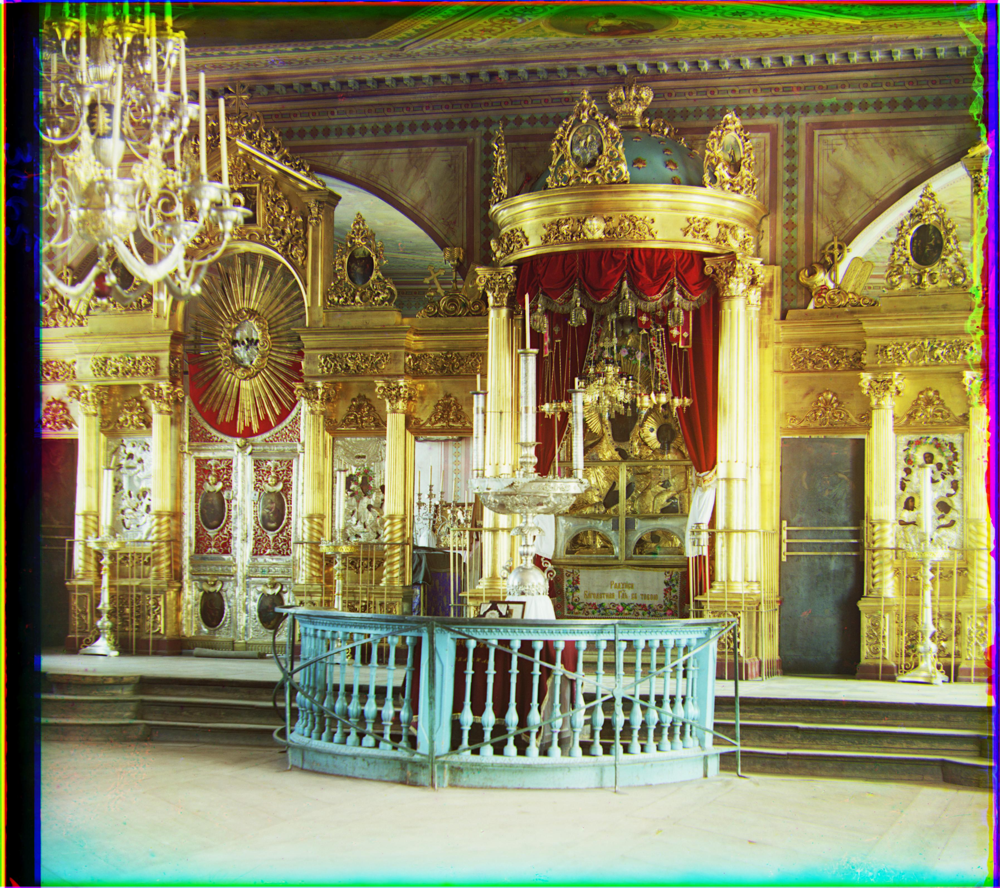
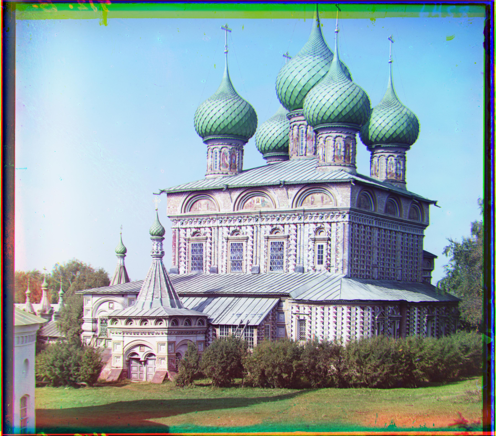
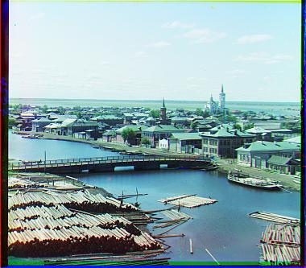

Red shift: (1, 1)
Blue shift: (2, 0)

Red shift: (0, 0)
Blue shift: (32, 11)

Red shift: (-8, 16)
Blue shift: (25, -21)

Red shift: (12, -3)
Blue shift: (-6, -11)

Red shift: (11, 5)
Blue shift: (-5, -17)

Red shift: (-2, -4)
Blue shift: (0, 1)
Red shift: (11, 4)
Blue shift: (0, -4)

Red shift: (-1, 0)
Blue shift: (10, 0)

Red shift: (-6, 10)
Blue shift: (10, -24)

Red shift: (37, -16)
Blue shift: (37, 11)
Red shift: (15, 8)
Blue shift: (31, 1)

Red shift: (-7, 0)
Blue shift: (12, -5)

Red shift: (0, 1)
Blue shift: (1, -2)

Red shift: (-8, 24)
Blue shift: (8, 2)